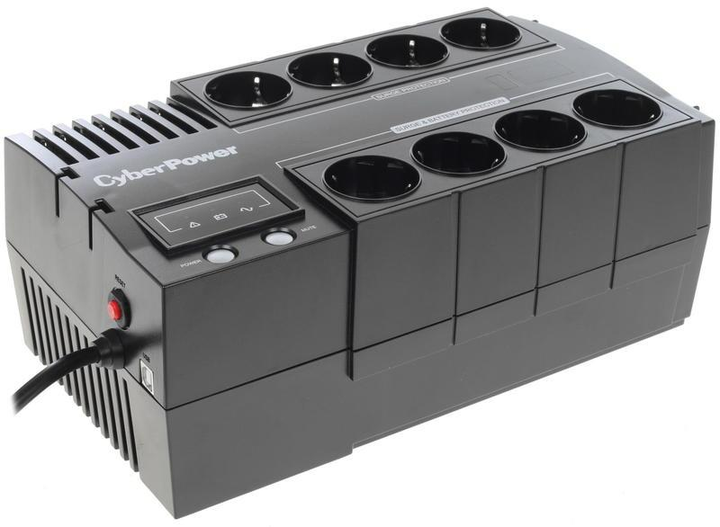

- Номинальное входное напряжение ( В перем. ): 230 ± 10%
- Диапазон входного напряжения ( В перем. ): 165 ~ 290
- Входная частота ( Гц ): 50 ± 5, 60 ± 5
- Шнур питания длина (м): 1.2
- Мощность (ВА): 650
- Мощность (Ватты): 360
- Время работы при 60Вт ( мин ): 28
- Время работы при 90Вт ( мин ): 16
- Типовое время перезарядки ( Часы ): 8
- Размеры (ШхВхГ) (дюйм): 3.31 x 6.26 x 9.92
- Размеры (ШхВхГ) (мм): 84 x 159 x 252
- Вес (фунты): 7.93
- Вес (кг): 3.6
35 660,00 тенге